Manutenzione ODP/ODL
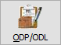
La manutenzione ODP/ODL si articola su due pagine distinte selezionabili con le linguette a destra; per ogni pagina sono presenti dei limiti di selezione per consentire di visualizzare solo una parte dei documenti presenti. L'unico limite proposto è la data di fine consegna calcolata in base ai giorni presenti in configurazione; è comunque necessario premere il pulsante Seleziona per accedere alla manutenzione dei dati.
Nel caso siano gestiti i progetti e si inserisca un codice prodotto è possibile includere nella selezione eventuali semilavorati associati al progetto del prodotto richiesto apponendo la spunta sul parametro "Includi SL".
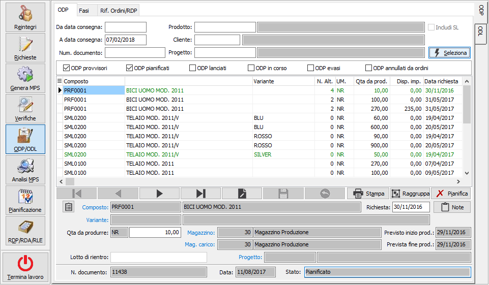
Sopra la griglia è presente la barra dei filtri da cui è possibile, spuntando o meno le caselle presenti, impostare quali ODP visualizzare in relazione allo stato.
L’ODP (e gli ODL collegati) possono assumere i seguenti stati:
Provvisorio: l’ODP appena generato è provvisorio, tutti gli ODP provvisori vengono cancellati e rigenerati ogni volta che viene eseguita la generazione del piano di produzione. L’ordinato a produzione del composto e l’impegnato da produzione dei componenti sono anch’essi provvisori e concorrono alla determinazione della disponibilità di magazzino solo all’interno delle procedure di produzione.
Pianificato: l’ODP assume lo stato di pianificato (cioè da produrre) nel caso di modifiche manuale ad un ODP provvisorio oppure tramite l’apposita funzione di pianificazione presente nella gestione piano. L’ODP dal momento in cui diventa pianificato non viene più rielaborato automaticamente; l’ordinato a produzione del composto e l’impegnato da produzione dei componenti diventano definitivi e concorrono alla determinazione della disponibilità di magazzino in tutta l’applicazione.
Lanciato: il lancio in produzione viene fatto per i singoli ODL relativi alle fasi interne. Sugli ODL lanciati è possibile generare i buoni di prelievo per il trasferimento dei materiali alla risorsa. Al momento in cui viene lanciata la prima fase del ciclo viene impostato a Lanciato anche lo stato dell’ODP. Nel caso di fasi esterne non esiste una fase di lancio vera e propria e l’ODL in tale caso viene impostato a Lanciato al momento in cui viene generato l’OT.
In corso: significa che per l’ODL è stato effettuato almeno un versamento (nel caso di fasi interne) o un rientro (nel caso di fasi esterne) ma la fase non è stata completata. Al momento in cui viene effettuato un versamento parziale oppure un rientro parziale dell’ultima fase del ciclo viene impostato a “In corso” anche lo stato dell’ODP.
Evaso: significa che l’ODL è stato evaso completamente, nel caso di completamento dell’ultima fase viene impostato ad Evaso anche lo stato dell’ODP.
Gli ODP/ODL possono essere modificati fino a quando non vengono pianificati.
Per gli ODP è possibile modificare la quantità da produrre, la data di prevista consegna e se presente il lotto di rientro; la modifica manuale pone l’ODP automaticamente in stato di pianificato.
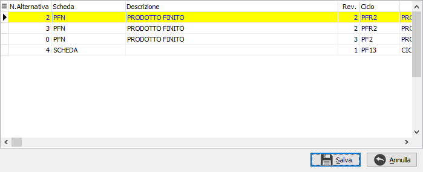
Se prevista la gestione delle alternative sarà presente anche il pulsante mostrato a lato; premendolo si apre la finestra a destra dove viene indicata in giallo l'alternativa attualmente utilizzata, di default è la 0 (zero); in questa fase è possibile selezionare con il doppio click del mouse la nuova scheda tecnica alternativa che sarà utilizzata per rigenerare gli ODL. Premendo il tasto Salva la modifica diventa definitiva ed anche in questo caso l'ODP viene posto automaticamente in stato Pianificato.E’ comunque possibile annullare, tramite apposito
bottone l’operazione, di pianificazione automatica fatta dal sistema;
analogamente è possibile pianificare manualmente un ODP  sempre con l'apposito bottone.
sempre con l'apposito bottone.
Il pulsante Stampa consente di stampare l'ODP selezionato; dalla griglia con il tasto destro del mouse si accede al menù contestuale da dove è possibile esportare il contenuto della griglia, stampare l'ODP selezionato o tutti gli ODP visualizzati. In tutti i casi è possibile effettuare la stampa includendo o meno le note tecniche eventualmente derivanti dalla scheda tecnica.
 Utilizzando il pulsante Raggruppa è possibile effettuare
il raggruppamento degli ordini di produzione; questa operazione consente
di selezionare più ODP provvisori e generare un unico ODP già pianificato
(a cui si collegano tutte le RDP), eliminando i singoli ODP provvisori.
Nella finestra vengono riportati, nella prima griglia, gli ODP attivi
raggruppati per prodotto, variante e progetto (in relazione alla gestione
attiva) e selezionando un elemento compaiono, nella griglia inferiore
gli ODP analitici.
Utilizzando il pulsante Raggruppa è possibile effettuare
il raggruppamento degli ordini di produzione; questa operazione consente
di selezionare più ODP provvisori e generare un unico ODP già pianificato
(a cui si collegano tutte le RDP), eliminando i singoli ODP provvisori.
Nella finestra vengono riportati, nella prima griglia, gli ODP attivi
raggruppati per prodotto, variante e progetto (in relazione alla gestione
attiva) e selezionando un elemento compaiono, nella griglia inferiore
gli ODP analitici.
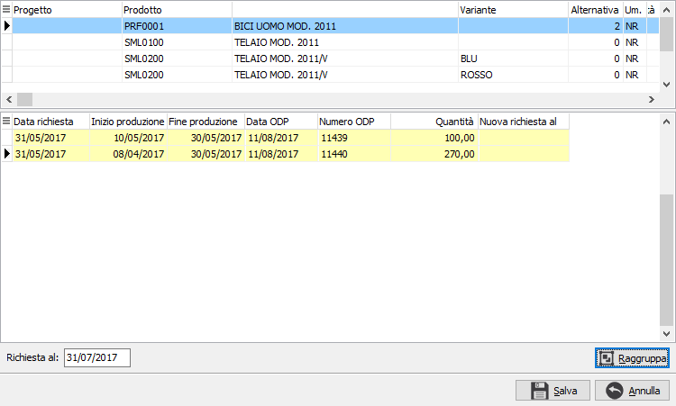
 Da questa griglia è possibile
selezionare gli ODP da raggruppare con il doppio clic del mouse oppure
utilizzando il menù associato al tasto destro del mouse tramite cui è
possibile anche annullare la selezione a tutti gli ODP, selezionare tutti
gli ODP oppure annullare un raggruppamento già effettuato; nella parte
bassa, sotto la griglia, è presente la nuova data di produzione che può
essere anche inserita manualmente (di base viene proposta la data
minore fra tutti gli ODP selezionati) ed il pulsante Raggruppa. Con gli
ODP selezionati se si preme il pulsante Raggruppa, viene effettuato il
raggruppamento e gli ODP appaiono come nell'esempio:
Da questa griglia è possibile
selezionare gli ODP da raggruppare con il doppio clic del mouse oppure
utilizzando il menù associato al tasto destro del mouse tramite cui è
possibile anche annullare la selezione a tutti gli ODP, selezionare tutti
gli ODP oppure annullare un raggruppamento già effettuato; nella parte
bassa, sotto la griglia, è presente la nuova data di produzione che può
essere anche inserita manualmente (di base viene proposta la data
minore fra tutti gli ODP selezionati) ed il pulsante Raggruppa. Con gli
ODP selezionati se si preme il pulsante Raggruppa, viene effettuato il
raggruppamento e gli ODP appaiono come nell'esempio:
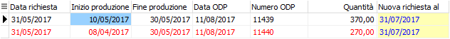
Gli ODP evidenziati in rosso saranno eliminati ed accorpati al primo ODP che sarà pianificato. Tutte le operazioni effettuate all'interno di questa finestra saranno salvate solo se si preme il pulsante Salva in basso, se si esce dalla finestra premendo Annulla tutte le modifiche effettuate andranno perse; analogamente se si esce premendo Salva sarà effettuato il raggruppamento degli ODP come previsto. Una volta effettuato, il raggruppamento non potrà essere annullato.
La pagina fasi mostra gli ODL, in alto, e per ogni ODL i componenti, associati all'ODP su cui eravamo posizionati nella pagina ODP. Le fasi esterne vengono mostrate in blu.
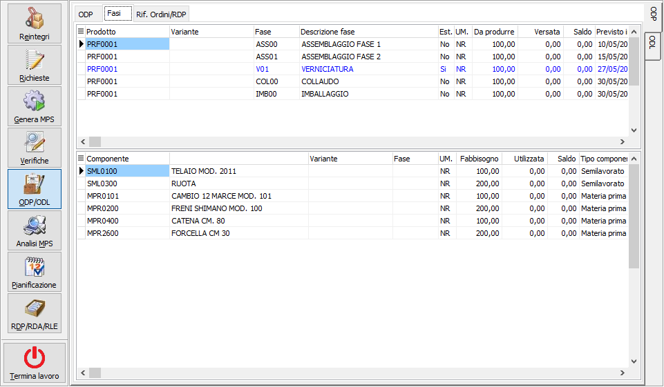
Per ogni fase relativa a ODL è possibile la modifica dei componenti dell'ODL, la modifica dei componenti è attiva solo per ODP/ODL provvisori o pianificati e per i provvisori comporta la pianificazione dell'ODP; premere il tasto destro del mouse sulla griglia e selezionare "Modifica componenti"; la modifica si effettua tramite la finestra mostrata sotto; vengono elencati tutti i componenti dell'ODL con le relative giacenze; la modifica riguarda tutti i componenti materia prima, non i semilavorati o il semilavorato alla fase; è possibile comunque inserire nuovi componenti anche di tipo semilavorato; è possibile modificare il dettaglio lotti/ubicazioni, non del componente alla fase, anche modificando le quantità originali, al salvataggio finale viene fatto un controllo di coerenza tra quantità del componente e quantità del dettaglio, se nel dettaglio si inseriscono quantità che differiscono dal componente è possibile aggiornare quest'ultimo con un bottone che è stato aggiunto al navigatore dei dettagli
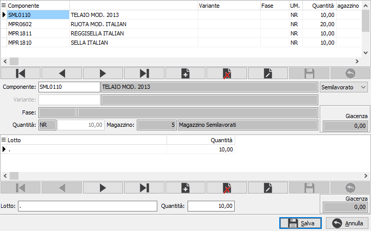
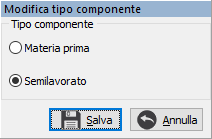
Per ogni fase è possibile (a condizione che non sia già stata lanciata) modificare la tipologia da interna ad esterna o viceversa semplicemente con il doppio clic del mouse.Nella griglia dei componenti, tramite doppio click in corrispondenza di un semilavorato appare un menù che consente di cambiare la “natura” del componente e trasformare il semilavorato in materia prima (per la quale verrà generata la RDA) oppure di ritornare allo stato originale di semilavorato. Al momento in cui viene effettuata questa modifica l’ODP provvisorio viene passato in stato Pianificato (e quindi non più modificabile).
Nella pagina Riferimenti ordini/RDP sono elencati i riferimenti ai documenti collegati: gli ordini clienti, se l'ODP deriva da RDP da ordini, oppure le RDP da reintegro o manuali.
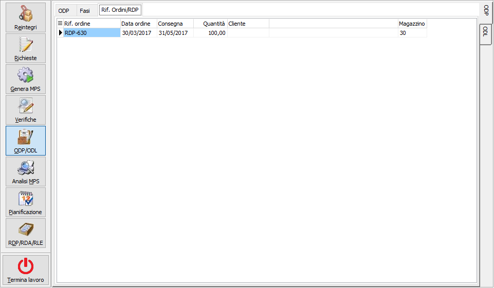
La manutenzione degli ODL è simile a quella degli ODP per la parte di selezione e dei filtri; è possibile (a condizione che l’ODL non sia già stato lanciato): modificare una fase da interna ad esterna o viceversa, modificare la risorsa associata (per le fasi interne) e il fornitore (per le fasi esterne).
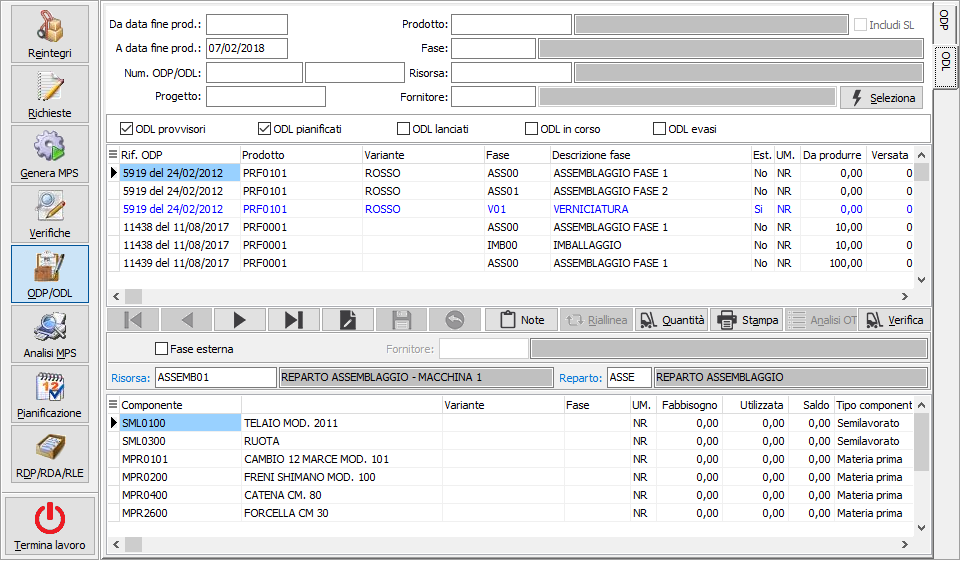
Il pulsante Note consente di visualizzare ed eventualmente modificare le note dell'ODL che derivano da quelle indicate sulla fase del ciclo oppure sulla fase generica.
Il pulsante Riallinea è attivo al momento in cui l’ODL della fase precedente è chiuso ma con una quantità diversa rispetto a quella prevista; cliccando sul bottone si riallinea la quantità da produrre degli ODL delle fasi successive a quella chiusa.
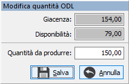
Il pulsante Quantità consente di modificare la quantità di un ODL; questa esigenza potrebbe verificarsi in presenza di disponibilità di prodotto alla fase rimaste da precedenti produzione non portate a fine ciclo; in questo modo il responsabile di produzione può manualmente riutilizzare la quantità disponibile a magazzino. Alla conferma dell’operazione vengono aggiornate anche le quantità delle fasi precedenti; la modifica è attiva con le seguenti caratteristiche:l'ODL e gli ODL relativi alle fasi precedenti devono essere in stato provvisorio o pianificato;
il piano di produzione attivo deve essere valido;
l'ODL deve riguardare una fase interna;
l'ODL non deve riguardare l'ultima fase del ciclo;
se queste condizioni sono soddisfatte il pulsante risulta attivo e premendolo si accede alla finestra riportata a lato da cui è possibile modificare la quantità; premendo il pulsante Salva sarà modificata la quantità sull'ODL corrente e sugli ODL relativi alle fasi precedenti, inoltre sia l'ODP di riferimento che tutti gli ODL collegati saranno messi in stato di Pianificato.
Il pulsante Verifica consente di verificare automaticamente se esistono giacenze disponibili per fase da utilizzare per lo specifico ODL. In pratica la funzione del pulsante Quantità viene eseguita su tutti gli ODL presentati a video; se sono presenti quantità per fase disponibili la funzione consente di utilizzarle.
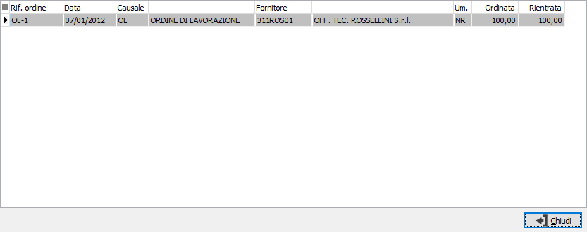
Il pulsante Analisi OT, attivo sulle fasi di lavorazioni esterne, consente di visualizzare la situazione degli OT (ordini terzisti) generati a fronte della lavorazione.Nella griglia dei componenti, tramite doppio click in corrispondenza di un semilavorato appare un menù che consente di cambiare la “natura” del componente e trasformare il semilavorato in materia prima (per la quale verrà generata la RDA) oppure di ritornare allo stato originale di semilavorato. Al momento in cui viene effettuata questa modifica l’ODP provvisorio, a cui è collegato l'ODL, viene passato in stato Pianificato (e quindi non più modificabile).
Per ogni ODL è possibile la modifica dei componenti, la modifica dei componenti è attiva solo per ODL provvisori o pianificati e per i provvisori comporta la pianificazione dell'ODP; premere il tasto destro del mouse sulla griglia e selezionare "Modifica componenti"; la modifica si effettua tramite la finestra mostrata sotto; vengono elencati tutti i componenti dell'ODL con le relative giacenze; la modifica riguarda tutti i componenti materia prima, non i semilavorati o il semilavorato alla fase; è possibile comunque inserire nuovi componenti anche di tipo semilavorato; è possibile modificare il dettaglio lotti/ubicazioni, non del componente alla fase, anche modificando le quantità originali, al salvataggio finale viene fatto un controllo di coerenza tra quantità del componente e quantità del dettaglio, se nel dettaglio si inseriscono quantità che differiscono dal componente è possibile aggiornare quest'ultimo con un bottone che è stato aggiunto al navigatore dei dettagli.
Il pulsante Stampa consente di stampare l'ODL selezionato; dalla griglia principale con il tasto destro del mouse si accede al menù contestuale da dove è possibile esportare il contenuto della griglia, stampare l'ODL selezionato o tutti gli ODL visualizzati. In tutti i casi è possibile effettuare la stampa includendo o meno le note tecniche eventualmente derivanti dalla scheda tecnica.